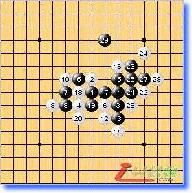
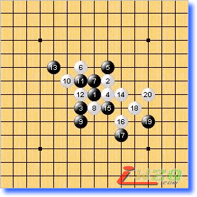
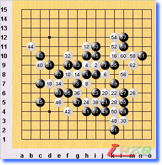
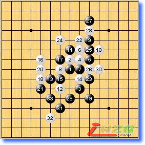
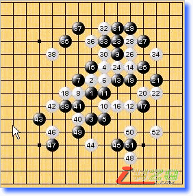
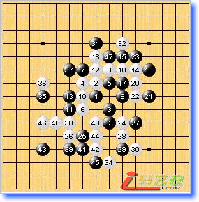

第十届世锦赛A组第二轮略评
#1 第十届世锦赛A组第二轮略评 作者：有志青年 发表时间：2007-8-11 10:25:37
第一局 黑方 Sushkov 白方 Kozhin 黑胜
kozhin第一局尝到甜头后继续采取赌博式下法，考sushkov是否会这个必胜。但是，白10并未选择最强的防守，而是一个非常古老并且已经被写入教科书的变例，这样的考试除了让我们这些后进引以为戒外没任何现实意义。

第二局 黑方 Savrasova 白方 Yamaguchi（山口）
胜负在快乐的山口看来好似天上的浮云，浮云般的6让美女棋手失去方向。数年前在上海曾经和许斌等人研讨过这个变化，记得当时的结论是黑胜，但相当的复杂难解，亦或现今有更简明的取胜之道？11败招，山口一剑封喉。

第三局 黑方 Iio 白方 Okabe 白胜
本局同室操戈，日本棋手比较偏爱斜月（丘月），13是本局的疑问手，13－10e比实战强。此后黑棋已无胜机，经过近三个半小时的鏖战，lio在即将要和棋的时候被okabe翻盘，黑59－13k，61－11m是正确的防守，那样局部白无胜。

第四局 黑方 purk 白方 吴镝 黑胜
岚月实战白棋很难有所作为，除非形成对攻局面。16少见的防守，实战黑棋的对应大体无误，19是本型定式常用的做棋手段，白已经不可能跟过去防了。或许22吴镝漏算了黑棋的妙手解vcf（白24时白左上有vcf，黑27有此一子正好可以解杀，也就是说要至少要在23手即算清右上白棋种种变化），23应该黑棋必胜！purk实力不容小觑。希望吴镝摆正心态，毕竟比赛才刚开始。

第五局 黑方 oll 白方 karlsson 白胜
记得我刚学棋那会就看karlsson在世界杯上的对局谱，有局瑞星记忆犹新，他的对手是早川嘉美。老辣的karlsson这盘没给后生机会，48时黑棋面临两难，左边和右下怎么兼顾？棋手在超前思维的心态下，往往容易忽视眼前的关节所在，49败招，48绝妙！螺蛳壳里做道场。

第六局 黑方 Chingin 白方 Taimla 白胜
有点黑色幽默的一局，祝taimla好运常在。
